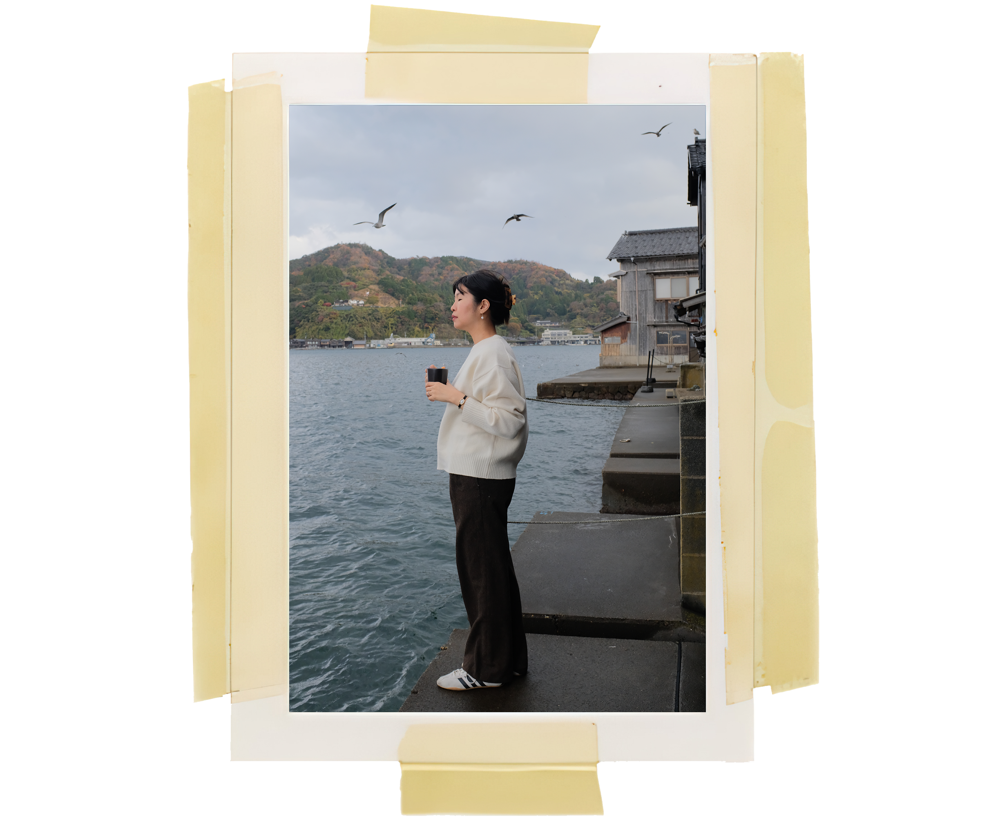

CRISTINA HUR
An extroverted introvert inspired by  the simple things in life. Creating modern nostalgia through
the simple things in life. Creating modern nostalgia through  holistic brand expressions rooted in aesthetic clarity.
Born along the shores of
holistic brand expressions rooted in aesthetic clarity.
Born along the shores of  the Pacific, my studio
the Pacific, my studio  reflects an amalgamation of my personal design influences while prioritizing the truth of raw user experiences.
reflects an amalgamation of my personal design influences while prioritizing the truth of raw user experiences.
I didn’t find design — it found me. And once it did, it never really let me go. For the past five years, I’ve dedicated my life to aligning with my personal vision, something I discovered somewhere between long drives, my 35mm lens, and the urge to preserve emotions and memories in poetry.

Let's work
Connection
Co-creation